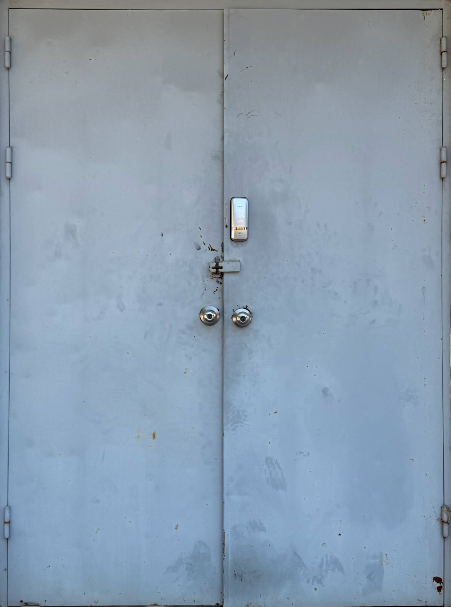

<!DOCTYPE html>
	<head lang="ko">
		<title>철문/title>
		<meta charset="UTF-8">
		<meta name="viewport" content="width=device-width, initial-scale=1.0">
		<meta name="keywords" content="문, 門, '문'의 구성요소">
        <meta name= "description" content="'문 (門)'의 구성요소에 대해 설명해 주는 웹사이트 입니다.">
        <link rel="stylesheet" href="door_style.css">
	</head>

<body>
    <section class="detail">
        <a href="door.html"></a>
        <article>
        <h1>
        철문
        </h1>
        <p>• 도장 처리된 강철(스틸).</p>
        <p>• 강철 외피와 내부 보강 또는 충전재로 구성.</p>
        <p>• 내구성과 방범 성능이 뛰어남.</p>
        <p>• 무겁고 부식에 민감할 수 있어 적절한 유지 관리가 필요.</p>
        <p>• 주로 창고, 기계실, 보일러실, 옥상 출입문 등에 사용.</p>
    	</article>
    </section>
</body>
</html>